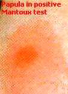

TUBERCULIN-TYPE HYPERSENSITIVITY

Perhaps, the best known example of delayed hypersensitivity is the tuberculin (Koch’s) reaction, which is produced by the intracutaneous injection of tuberculin, a protein-lipopolysaccharide component of the Mycobacteria. It is observed by practitioners as positive skin Mantoux allergotest. After intracutaneous injection of tuberculin in a previously sensitized individual, reddening and induration of the site (erythema and papule) begins to appear in eight to 12 hours, reaches a peak in 24 to 72 hours, and thereafter slowly subsides.An extremely sensitive patient may indeed develop necrosis at the site of injection.
The typical feature of tuberculin hypersensitivity is that allergen persists within dermis and provokes the inflammation forming papula.
Morphologically the lesion is characterized by the accumulation of mononuclear cells in the subcutaneous tissue, deep and superficial dermis (to 8-12 h). There is predominant accumulation around small veins and venules, producing a characteristic perivascular "cuffing". The cells are T lymphocytes and few cutaneous dendritic cells. Varying numbers of polymorphonuclear leukocytes may also be present, depending on the intensity of the reaction and the amount of necrosis.
(Basophilic infiltration, previously listed among signs of tuberculin-like DHT, is not typical for tuberculin-like allergy in humans, but rather characterizes contact dermatitis and some local experimental late anaphylaxis phenomena, like Jones-Mote reaction).
Increased vascular permeability associated with widening of interendothelial gaps is a constant feature beginning four to six hours after injection of antigen and reaching a peak by 12 to 24 hours. To this terms, the wave of migrating macrophages and some epidermal Langerhans’ cells enter the dermis, vice versa some T lymphocytes migrate in epidermis. But, unlike contact dermatitis, this variant of DTH proceeds without any edema of epidermis.
Migration process progresses to 48 h after injection. After 72-h macrophages, lymphocytes and covering keratinocytes over the focus of inflammation express MHC antigens and cell adhesion molecules. Thrombogenic properties of endothelium increases and fibrin deposition in the interstitium appear to be the main cause of the induration, which is characteristic of delayed hypersensitivity skin lesions. Such induration can be prevented by anticoagulants in experimental animals and in man.
As other delayed hypersensitivity reactions (see above “Contact hypersensitivity”), tuberculin one is initiated by specifically sensitized T lymphocytes, generated during the initial contact with the antigen. Sensitization involves CD4+ T cells that recognize processed antigens on the surface of antigen-presenting cutaneous dendritic cells (close to epidermal Langerhans’ cells but devoid of Birbeck’s granule) in association with class II MHC molecules. Memory Th1 cells generated during the initial sensitization remain in circulation for a long time, often several years. When the individual is reexposed to the specific antigen (in Mantoux test - tuberculin), memory Th1 lymphocytes are stimulated to divide and release a variety of cytokines. The function of these autocoids is to amplify the response by recruiting inflammatory cells, activating them and keeping them at the site. In a fully developed delayed hypersensitivity reaction, therefore, only a very small percentage of the mononuclear cell infiltrate is made up of the antigen-specific T cells that initiated the reaction. Among the cytokines, the most important appear to be the ones that result in the accumulation and activation of macrophages within the lesion. These include IL-12, macrophage chemotactic factors, macrophage inhibitory factors, IL -1, TNFa , and IFNg . Antibodies to TNFa noticeably decrease the intensity of tuberculin reaction.
With certain persistent or non-degradable antigens, the initial perivascular mononuclear cell infiltrate is replaced by granulomas over a period of two to three weeks. That means the transgression of tuberculin-like reaction into granulomatous one (see below).
Several diagnostical skin allergotests for sensitization towards different infectious and parasitic agents are based on mechanism, identical or close to that of Mantoux test.
These are Mitzuda’s and Fernandez’ tests (with lepromin, in leprosy), two-step tuberculin Stormont’s test, multilocal Heaf’s tuberculin test and Moro’s test with tuberculin ointment (in tuberculosis), Schick’s test in diphtheria, Franci’s test with capsular Pheumococci polysaccharide (in croupous pneumonia), Montenegro’s test (in South African leushmaniosis), Foshay’s test (in tularemia), Bachman’s test (in trichinosis), Casoni’s test (in echynococcosis), similar skin tests in coccidiosis, brucellosis, histoplasmosis etc.
Besides infections, analogous DTH mechanisms are active in occupational beryllium and zirconium-produced dermatitis.
In berylliosis, in plus to skin reaction, there is also bronchopulmonary involvement, proceeding as allergic bronchoalveolitis with contribution of tuberculin-like delayed hypersensitivity and IC mediated reaction. The illness resembles the extrinsic allergic alveolitis, described above. It may result in interstitial pneumofibrosis (Hamman-Rich’ syndrome). Skin Israel-Curtis’ allergotest (with beryllium salts) confirms the sensitization. Many cases of extremely severe sensitization are described in persons, having very short occasional contacts with beryllium salts. In some of these tragic observations the duration of contact was remarkably short – about 20 minutes or so.
Virtually, popular writers, as a source of ecological danger underestimate beryllium: much more public attention is drawn by the problems of radionuclides or asbestos contamination. But, let us remind that in old texts of German alchemists beryllium is called “devil’s metal.“
NEXT CHAPTER
OR